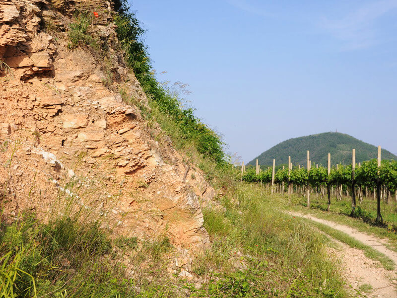
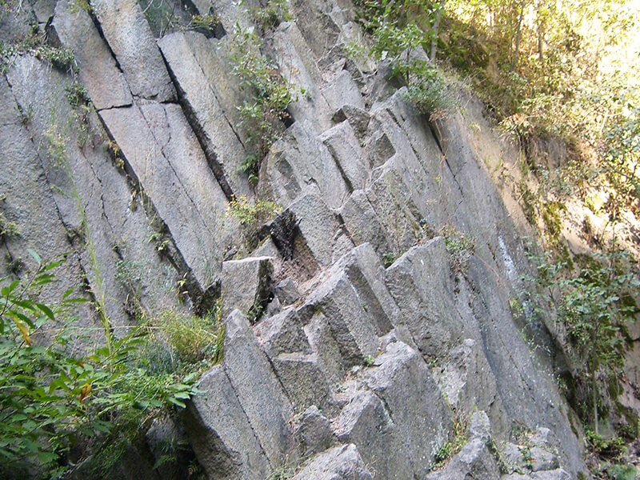

Home >> Natura e Storia
>> Genesi, Geologia e Termalismo
Genesi, Geologia e Termalismo
I Colli Euganei hanno origine da due fenomeni naturali fondamentali: la sedimentazione e le emissioni vulcaniche. Queste
ultime sono quelle che oggi permettono di sfruttare il calore per le acque termali.
Le rocce sedimentarie
Le rocce che si rinvengono nel territorio euganeo partono da circa 160 milioni di anni fa con il Rosso Ammonitico, un sedimento
calcareo depositatosi su fondali marini profondi. Qui nuotavano le famose ammoniti (estinte, ma simili a
cefalopodi attuali come il Nautilus e parenti alla lontana delle seppie). Alla fine del Giurassico si deposita
un fine calcare bianco, la Maiolica (nota nel nord-est come Biancone), con lenti di selce nera, molto stratificato.
Successivamente viene sostituito da un calcare a grana fine, grigiastro, definito come Scaglia Variegata
Alpina. Sono tutti fanghi calcarei marini di mare profondo che si depositeranno fino a 100 milioni di anni
fa. Successivamente, e per tutto il Cretaceo superiore (quindi da circa 100 Ma fino a 65 Ma), si depositerà
la Scaglia Rossa, la roccia sedimentaria più diffusa e nota nel territorio dei Colli Euganei. La serie si
chiude con le Marne euganee, rocce di tipo calcareo argillose (poco più di 30 milioni di anni).

Roccia sedimentaria - scaglia rossa
(foto di PR Colli Euganei)
Le rocce vulcaniche
Il primo evento eruttivo: lave basaltiche
Nel Paleogene un evento vulcanico produce della lava basaltica (il basalto è una roccia effusiva, cioè si raffredda in superficie,
povera in silice e ricca in minerali ricchi di MgO e CaO); essa è fluida e si espande in colate sottomarine
mescolandosi ai sedimenti marini. Ci sono grandi quantità di prodotti d'esplosione fatti di ceneri, lapilli,
prodotti vetrosi. Nel complesso si producono lave ricche di ferro e magnesio, simili a quelle delle Hawaii.
Tutto questo 43 milioni di anni fa circa (Eocene superiore). Resta coinvolta nell'evento la parte centrale
dei Colli.
Il secondo evento eruttivo: magmi acidi
Un secondo ciclo eruttivo inizia dopo qualche milione d'anni con diversa modalità: magmi acidi e viscosi diventeranno rocce
come rioliti, trachiti e latiti, messe in posto prevalentemente nel sottosuolo. Il ciclo termina con
altre lave basaltiche, simili per tipo ma molto inferiori per quantità, a quelle del primo ciclo eruttivo.
Siamo nell'Oligocene (30-35 Ma). Dalle lave riolitiche a quelle latitiche diminuisce il contenuto in
silice e le rocce che si formano sono via via più scure e ricche in ferro e magnesio. Le intrusioni magmatiche
hanno sollevato e modificato il fondale marino. Ecco le forme dei Colli Euganei:
- duomo o cupola di ristagno: la lava ha alzato la copertura, fuoriuscendo in superficie e ristagnando
sopra la fessura di emissione;
- laccolite classico: il magma si è intruso lungo piani di stratificazione sollevando a cupola il tetto;
- laccolite di eruzione: come prima, solo che in questo caso la spinta del magma ha lacerato le formazioni
rocciose di copertura ed è fuoriuscito in superficie;
- corpi discordanti: quando il magma ha trovato fratture discordanti con la stratificazione e sono
diventate queste le vie preferenziali di risalita.
Le eruzioni si sono verificate in ambiente sottomarino ma probabilmente i coni più elevati sono emersi dalla superficie del
mare, determinando la creazione di un piccolo arcipelago di isolotti vulcanici. Tale configurazione si
è protratta fino all´inizio del Quaternario (circa due milioni di anni fa) momento in cui un sollevamento
generalizzato del bacino insieme a fenomeni alluvionali di grossa entità, diedero origine alla formazione
della Pianura Padana. Dopo l'emersione dal mare, un'erosione selettiva di milioni di anni ha prodotto
un paesaggio tormentato e vario, disgregando e asportando in parte le coperture sedimentarie più tenere,
mettendo quindi in risalto i duri corpi vulcanici in forme coniche levigate e snelle.

Roccia vulcanica - riolite
Il Termalismo
L'area euganea è tra le più rinomate d'Italia per quanto riguarda la presenza di risorse termali, che costituiscono
una importante attrazione turistica a livello internazionale. Il bacino idrominerario dei Colli Euganei include
i comuni di: Abano Terme, Arquà Petrarca, Baone, Battaglia Terme, Due Carrare, Galzignano Terme, Monselice,
Montegrotto Terme, Teolo e Torreglia, per un'estensione complessiva di circa 23 Km2. Oltre 130 stabilimenti
e circa 220 piscine termali, con una capacità ricettiva di oltre 13.000 posti letto, fanno delle Terme Euganee
una delle più importanti e apprezzate realtà a livello europeo.
Le proprietà delle acque termali euganee sono note fin dai tempi antichi, come testimonia il culto dei Veneti
Antichi per il dio Aponus, al quale si attribuivano i benefici effetti curativi. Le testimonianze archeologiche
ancora oggi visibili soprattutto presso Montegrotto Terme, mettono in luce come nell'epoca romana vennero
realizzati importanti stabilimenti termali, ricordati anche nei preziosi scritti di autori come Tito Livio
e Plinio il Vecchio. Nuovo impulso allo sfruttamento della risorsa termale venne dato dalla Serenissima e,
in seguito, a partire dal XVIII sec., mentre, dal secolo successivo, iniziarono a fiorire importanti stabilimenti
alberghieri.
L'origine delle acque termali
Contrariamente a quanto si possa pensare, è esclusa qualsiasi relazione tra le acque calde e il fenomeno vulcanico euganeo,
troppo antico per rappresentare ancora una sorgente attiva di calore. Analisi e studi approfonditi, già dalla
metà degli anni '70 del secolo scorso, hanno stabilito che le acque sono di natura meteorica (precipitazioni)
e che raggiungono il suolo in un'area montana individuata a nord - nord ovest dei Colli Euganei, principalmente
nel territorio prealpino sedimentario delle Piccole Dolomiti (Monte Pasubio, gruppo del Carega). Qui iniziano
il loro lento cammino di discesa entro sistemi di fratture delle permeabili rocce calcaree, raggiungendo
profondità di circa 3.000 metri, fino ad incontrare un basamento cristallino impermeabile. Durante la discesa
le acque acquistano temperatura, per effetto geotermico (riscaldamento naturale della crosta terrestre man
mano che si scende verso il mantello), salinità e una leggera radioattività.
La risalita delle acque nell'area euganea
La presenza delle acque termo-minerali nella zona euganea viene attribuita all'ostacolo creato in profondità dalle masse
laviche (solide e impermeabili) e ad una serie di fratture nelle stesse che favoriscono la rapida risalita
delle acque, sospinte dalla pressione idraulica dell'intero bacino sotterraneo. Il tempo necessario alle
acque per compiere il tragitto dalla zona di caduta al bacino euganeo è, secondo studi recenti, lunghissimo
e molto superiore ai 25 anni previsti dai primi studi.
Quando ritornano in superficie nella zona dei Colli Euganei presentano una temperatura media di 75°C, una certa radioattività
e numerosi sali minerali provenienti dallo scioglimento delle rocce (cloro, sodio, potassio, magnesio, zolfo,
bromo, iodio, silicio). Dal punto di vista della temperatura, le acque sono definite come "ipertermali" (T
> 40 C°), con punte massime di circa 86 C°. Su base chimica esse sono di due tipologie: clorurato-sodiche
e salso-bromo-iodiche. L'acqua termale è fondamentale per la preparazione, in apposite vasche, del fango
vegeto-minerale ottenuto dalla spontanea mineralizzazione di particolari alghe microscopiche, che è l'elemento
curativo caratteristico del bacino termale.


 Italiano
Italiano
 English
English